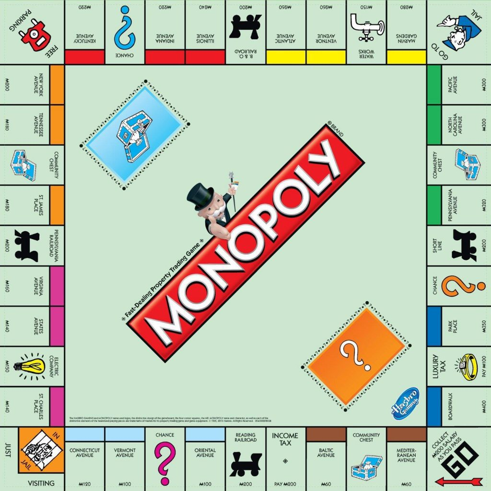
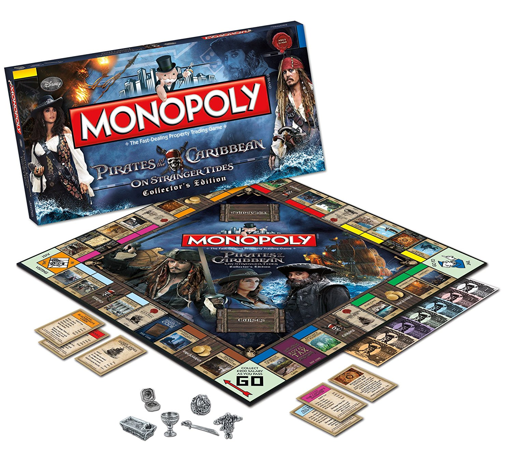

Antes
Un juego creado con la funcion de servir como herramienta para enseñar las teorias acerca de la justicia social y economica extraidas del estudio titulado Progreso y Miseria de Henry George.
Monopoly
Un juego creado con la funcion de servir como herramienta para enseñar las teorias acerca de la justicia social y economica extraidas del estudio titulado Progreso y Miseria de Henry George.
Ahora
Un juego creado con la funcion de servir como herramienta para enseñar las teorias acerca de la justicia social y economica extraidas del estudio titulado Progreso y Miseria de Henry George.
